터미널 · Docker · Git 으로 "어디서나 똑같이 돌아가는" 환경 만들기
발표자: 장보윤 · 저장소 github.com/tikita12/E1-1
미션 소개 · 세 가지 도구
경로 · 파일 권한(rwx)
이미지 · 컨테이너 · Dockerfile · 포트
바인드 마운트 · 볼륨
버전 관리 · 원격 저장소
트러블슈팅 · 결과 · 배운 점
Compose · 멀티 컨테이너 · 환경변수 · SSH
내 집 부엌에선 맛있던 라면이
친구 집에선 냄비·물·불이 달라서 망함
→ 프로그램도 컴퓨터마다 설치된 것이 달라 안 돌아갈 수 있음
냄비·물·불까지 한 상자에 담아서
어디서든 똑같은 라면을 끓이자!
→ 누구나 같은 방법으로 실행 · 공유 · 수정할 수 있는 환경
💡 개발은 코드를 쓰는 순간이 아니라, 환경을 준비하는 순간부터 시작된다.
마우스 대신 글자로 명령하는 컴퓨터 대화창
비유: 컴퓨터랑 하는 채팅
프로그램과 필요한 것들을 통째로 포장해서 어디서든 실행
비유: 반찬까지 다 들어있는 도시락통
작업 기록을 저장(Git)하고 인터넷에 공유(GitHub)
비유: 게임 세이브 포인트 + 클라우드
🏫 제가 사용한 환경: Windows + PowerShell + Ubuntu(WSL 2) + Docker Desktop 4.97.0 (Engine 29.9.2) + Git Windows 2.55.0 / WSL 2.53.0
PS> get-childitem -name docs evidence site Dockerfile README.md
터미널에서 실제로 폴더 목록을 확인한 결과
| 서랍(경로) | 무엇이 들어있나? |
|---|---|
site/index.html | 웹페이지 원본 📄 |
Dockerfile | 도시락 만드는 레시피 📝 |
README.md | 전체 과정 설명서 📘 |
docs/, evidence/ | 증거 사진 📸 |
2026-11-04 · WSL 2 / zsh · Linux 홈의 별도 실습 폴더
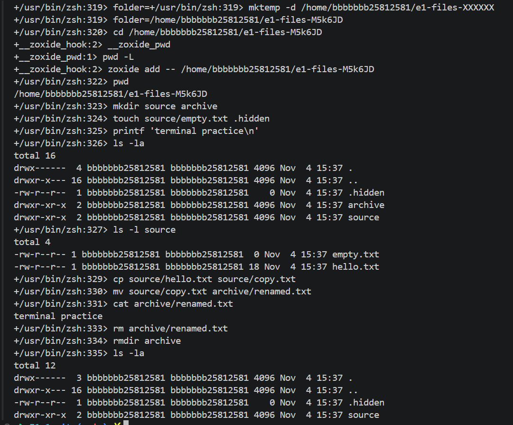
빈 파일: 0바이트
텍스트 파일: 18바이트
이동 후 내용: terminal practice
삭제 후: .hidden과 source 유지
mkdir: 폴더 생성 · cp: 복사
mv: 이동·이름 변경 · cat: 내용 읽기
rm: 파일 삭제 · rmdir: 빈 폴더 삭제
"서울시 ○○구 ○○동 123번지"
어디서 말해도 항상 같은 곳
C:\Users\bshin\mission-web\site /usr/share/nginx/html
👉 바인드 마운트에서 정확한 폴더를 지정할 때 사용
"지금 있는 곳에서 옆 방"
현재 위치에 따라 가리키는 곳이 달라짐
COPY site/ ... # 빌드 폴더 기준 docker build . # . = 지금 폴더
👉 Dockerfile 안에서 프로젝트 파일을 가리킬 때 사용
허용할 점수를 더하면 끝!
주인 · 그룹 · 다른 사람 순서로 세 자리
| 숫자 | 뜻 |
|---|---|
| 600 | 주인만 읽기+쓰기(4+2) · 나머지 ❌ |
| 644 | 주인 읽기+쓰기 · 나머지 읽기만 |
| 755 | 주인 모두(7) · 나머지 읽기+실행(5) |
# 변경 전 $ ls -l ~/permission-practice/hello.txt -rw-r--r-- 1 bshin bshin 0 ... hello.txt $ chmod 600 ~/permission-practice/hello.txt # 변경 후 $ ls -l ~/permission-practice/hello.txt -rw------- 1 bshin bshin 0 ... hello.txt
🔒 목적: 다른 사람이 못 보게 나만 읽고 쓰는 비밀 파일로 만들기
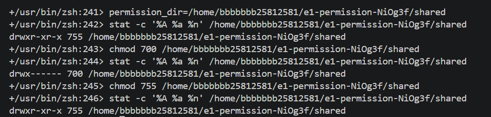
755 → 700 → 755
700: 소유자만 rwx · 755: 나머지도 r-x
r: 이름 목록 · w: 항목 생성·삭제
x: 폴더 진입·내부 경로 탐색
항목 생성·삭제에는 보통 w와 x가 함께 필요. 실제 접근에는 상위 폴더 권한도 영향을 줌.
레시피
붕어빵 틀 (변하지 않음)
찍어낸 붕어빵 (실제로 실행 중)
프로그램 + 필요한 모든 재료를 묶은 설계 꾸러미
예) mission-web:1.0, nginx:alpine
이미지로 만든 실행 중인 프로그램, 하나의 틀로 여러 개 가능
예) mission-web-container
PS> docker --version Docker version 29.9.2, build a82e528 PS> docker desktop status Status running PS> docker version Client: Version 29.9.2 ← 주문 받는 점원 Server: Engine 29.9.2 ← 요리하는 주방
PS> docker run hello-world Unable to find image locally Pulling from library/hello-world ... Hello from Docker! This message shows that your installation appears to be working correctly.
✅ 이미지가 없으면 인터넷(Docker Hub)에서 자동으로 받아와 실행!
PS> docker images # 갖고 있는 "틀" 목록 IMAGE ID DISK USAGE hello-world:latest c567b231f656 25.9kB mission-web:1.0 da9b11e9b04b 93.6MB ← 내가 만든 이미지! nginx:alpine 785835ea65db 94.5MB ubuntu:latest 6a06111c3b0a 163MB PS> docker ps -a # 만든 "붕어빵" 전체 목록 (꺼진 것 포함) IMAGE STATUS PORTS NAMES hello-world Exited (0) brave_einstein nginx:alpine Up 38 minutes 0.0.0.0:8081->80/tcp mission-web-bind mission-web:1.0 Up 39 minutes 0.0.0.0:8080->80/tcp mission-web-container
Exited hello-world는 인사만 하고 할 일 끝 → 퇴근
Up 웹 서버는 손님을 계속 기다려야 함 → 근무 중
📜 docker logs 기록 · 📊 docker stats 자원 사용량
docker --version Docker version 29.9.2, build a82e528 docker info --format 'OSType={{.OSType}} ServerVersion={{.ServerVersion}}' OSType=linux ServerVersion=29.9.2
NGINX 두 개 실행 중
호스트 포트: 8080 · 8082
NGINX 한 개 생성됨
현재 실행 중인 상태는 아님
hello-world 두 개
종료 코드 0으로 종료
2026-11-04 보완 시점의 상태. 전체 목록과 명령은 README에 기록.
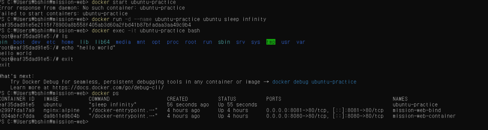
📸 실제 화면: docker exec로 들어가 명령 실행 → exit 후에도 ubuntu-practice는 여전히 Up 상태 🖥️ (컨테이너 = 내 컴퓨터 속 작은 별도 컴퓨터)
새로운 창을 열고 들어감 → 내가 나가도(exit) 방(컨테이너)은 그대로 켜져 있음
원래 돌던 메인 프로그램에 직접 연결 → 거기서 종료하면 컨테이너도 꺼질 수 있음
docker exec e1-ops-20261104150811 \ bash -c 'echo inside-ubuntu; ls /; exit' inside-ubuntu # bin, boot, dev 등 루트 목록 출력 docker ps --filter name=e1-ops-20261104150811 Up Less than a second docker logs e1-ops-20261104150811 e1-container-started
추가로 실행한 Bash는 종료.
메인 프로세스 sleep infinity는 계속 실행 중.
CPU: 0.00%
메모리: 3.27MiB / 15.25GiB
PIDS: 1
출력 일부 발췌. 전체 명령·결과는 README에 기록.
메인 프로세스 유지
컨테이너: Up
실행 중지
Exited (137)
Running=false
ps -a 목록에는 남음
컨테이너 삭제
이름으로 조회한 목록:
헤더만 출력
docker inspect --format 'Status={{.State.Status}} Running={{.State.Running}}' \ e1-ops-20261104150811 Status=exited Running=false
실제 종료 코드 137을 기록. 이 로그만으로 원인은 단정하지 않음.
중지·삭제의 전체 명령과 출력은 README에 기록.
FROM nginx:alpine COPY site/ /usr/share/nginx/html/
이미 잘 만들어진 웹 서버 NGINX(가벼운 alpine 버전)를 바탕으로 시작
내 site/ 폴더의 웹페이지를 NGINX가 보여주는 폴더로 복사
웹 서버 베이스 이미지 + 정적 콘텐츠만 교체
→ 간단하고 실수가 적음
이미지
컨테이너
PS> docker build -t mission-web:1.0 . [+] Building 1.1s (7/7) FINISHED => CACHED [1/2] FROM docker.io/library/nginx:alpine ← 받아둔 도우 재사용 => [2/2] COPY site/ /usr/share/nginx/html/ ← 내 토핑 추가 => naming to docker.io/library/mission-web:1.0 PS> docker run -d --name mission-web-container -p 8080:80 mission-web:1.0
-t 이름표 붙이기 · -d 뒤에서 조용히 실행 · --name 컨테이너 이름 · -p 포트 연결(다음 장!)
캡처 위쪽: FROM · COPY · FINISHED
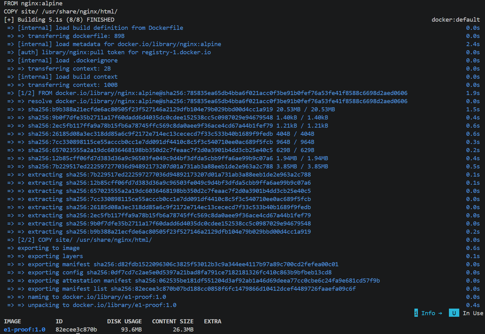
같은 캡처 아래쪽: 이미지 저장 · e1-proof:1.0 목록
8080번
80번 (NGINX)
컨테이너는 독립된 네트워크 공간(별도 건물)이라 연결해 주지 않으면 밖에서 들어갈 수 없음
왼쪽 = 내 PC : 오른쪽 = 컨테이너
같은 80번이라도 현관만 다르면 OK
→ 8080, 8081 두 개 동시 운영
PS> curl.exe -i http://localhost:8080 HTTP/1.1 200 OK ← "잘 받았어요!" Server: nginx/1.31.8 Date: Tue, 03 Nov 2026 04:13:25 GMT Content-Type: text/html <h1>bind mount works!</h1> PS> curl.exe -i http://localhost:8081 HTTP/1.1 200 OK <h1>bind mount restored!</h1>
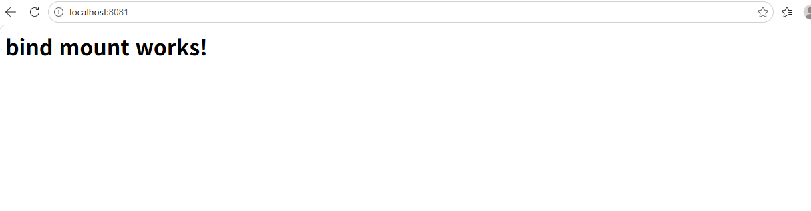
📸 브라우저 localhost:8081 접속 화면 — 바인드 마운트 수정 전(works!) · 파일을 고치면 restored!로 바뀜 (→ 슬라이드 16)
✅ 200 = 성공 · (404 = 페이지 없음, 500 = 서버 오류)
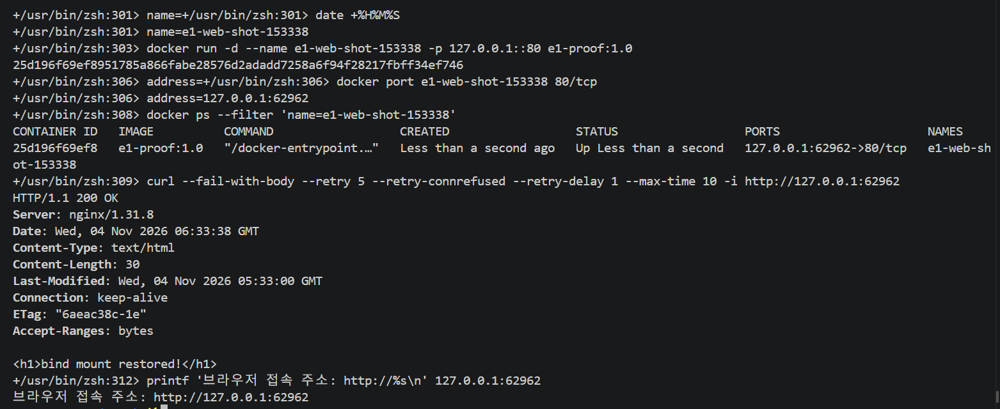
127.0.0.1:62962 → 컨테이너 80 · 이미지에 복사한 페이지 응답 확인
이번 컨테이너는 바인드 마운트 없이 실행. 본문 문구는 기존 웹 원본의 내용.
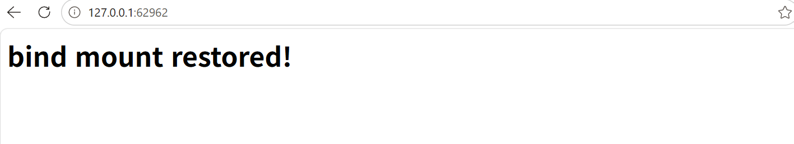
터미널에서 확인한 포트 = 브라우저 접속 포트
e1-proof:1.0 → 컨테이너 80 → 호스트 62962 → 브라우저
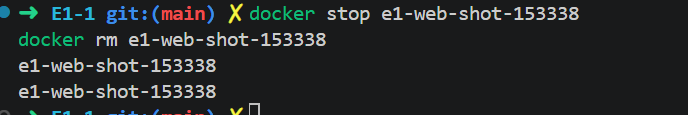
실행 중인 컨테이너 중지
중지된 컨테이너 삭제
브라우저 촬영 완료 후 정리. 커스텀 이미지 자체를 삭제한 것은 아님.
PS> docker run -d --name mission-web-bind -p 8081:80 `
--mount "type=bind,source=C:\Users\bshin\mission-web\site,target=/usr/share/nginx/html,readonly" `
nginx:alpine
수정 전
bind mount works!
PC에서 index.html
문구만 수정
새로고침 후 (재빌드 ❌)
bind mount restored!
🪟 source = 내 PC 폴더 · target = 컨테이너 속 폴더
🔒 readonly = 컨테이너는 보기만, 원본 수정 금지
파일 수정 + 이미지 재빌드를 해도
실행 중인 컨테이너는 옛날 문구 그대로
<h1>bind mount works!</h1> ← 그대로
→ 새 내용을 보려면 컨테이너를 새로 만들어야 함
재빌드 없이 PC 파일만 고쳐도
즉시 반영
<h1>bind mount restored!</h1> ← 바뀜
→ 개발 중 수정·확인을 빠르게 반복할 때 편리
💡 이미지(틀)와 컨테이너(붕어빵)는 서로 분리되어 있다!
파일 수정 전·후 모두
403 Forbidden
http://127.0.0.1:54514
이번 시도의 변경 반영은 미확인
원본 폴더: 700 · 파일: 644
NGINX: Permission denied
후속 결과: 폴더 755 변경 확인
컨테이너 부재로 HTTP 검증 실패
2026-11-04 실패 기록. 당시 실패 기록. 후속 재검증에서는 200 응답과 변경 반영 확인.
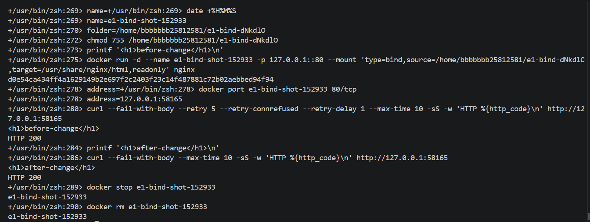
같은 컨테이너·주소에서 호스트 파일만 수정 → before-change / after-change, 모두 HTTP 200
재빌드·재시작 없이 반영. 실제 접속: http://127.0.0.1:58165 · 확인 후 중지·삭제.
사물함에 글쓰기
사물함은 그대로
같은 사물함 열기
PS> docker volume create mission-data # 사물함 만들기 PS> docker run -d --name volume-test1 -v mission-data:/data ubuntu sleep infinity PS> docker exec volume-test1 sh -c "echo saved-in-volume > /data/hello.txt" PS> docker rm -f volume-test1 # 컨테이너 삭제! PS> docker run -d --name volume-test2 -v mission-data:/data ubuntu sleep infinity PS> docker exec volume-test2 cat /data/hello.txt saved-in-volume # ✅ 데이터 살아있음!
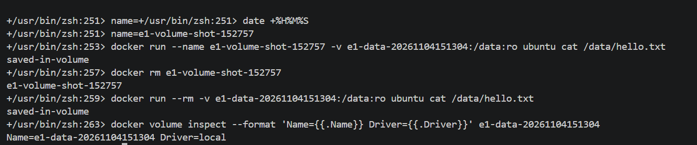
saved-in-volume 두 번 출력
두 컨테이너 모두 읽기 전용 연결
컨테이너 삭제 후에도Driver=local 확인
| 🪟 바인드 마운트 | 🗄️ 볼륨 | |
|---|---|---|
| 한 줄 설명 | 내 PC 폴더를 컨테이너에 직접 연결 | Docker가 관리하는 저장 공간 |
| 장점 | PC에서 파일을 바로 열고 고치기 쉬움 | 컨테이너를 바꿔도 다시 연결하기 쉬움 |
| 단점 | PC 경로에 의존 → 다른 PC에선 경로 수정 필요 | 일반 폴더처럼 직접 편집하기 불편 |
| 내가 쓴 곳 | 웹페이지(site/) 수정 · 8081 | 데이터 보관(mission-data) |
| 비유 | 방과 바로 통하는 창문 | 학교에 맡겨둔 사물함 |
💾 보너스: Docker 재설치 전 볼륨을 .tar.gz로 백업 → 재설치 후 복원해 saved-in-volume 다시 확인
내 컴퓨터에서 작업 기록을 저장 · 되돌리기
인터넷에 올려 공유 · 협업
PS> git config --global --get init.defaultBranch main PS> git remote -v origin https://github.com/tikita12/E1-1.git (fetch) 가져오기 origin https://github.com/tikita12/E1-1.git (push) 올리기
🔒 토큰 · 비밀번호 등 민감정보는 문서와 캡처에 남기지 않음
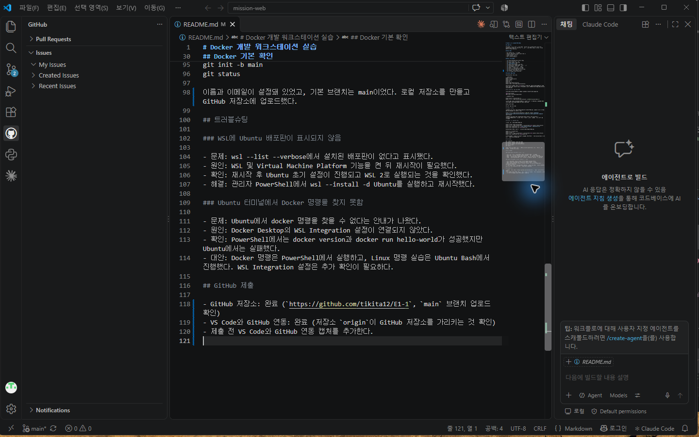
📸 VS Code에서 GitHub 로그인 · 저장소 연동 (하단 main 브랜치)
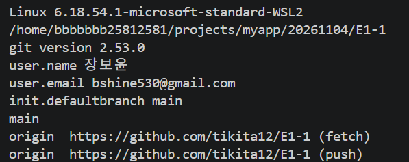
uname -sr pwd git --version git --no-pager config --get-regexp \ '^(user\.(name|email)|init\.defaultbranch)$' git --no-pager branch --show-current git --no-pager remote -v
로컬 파일 변경 이력·커밋 관리
사용자 정보는 커밋 작성자 정보
원격 저장소 호스팅·코드 공유·협업
로그인과 원격 인증은 별도 확인
init.defaultbranch는 새 저장소의 기본값. 현재 브랜치를 뜻하지 않음.
git --version git version 2.53.0 git branch --show-current main git remote -v origin https://github.com/tikita12/E1-1 (fetch) origin https://github.com/tikita12/E1-1 (push) git status --short M README.md M presentation/index.html
M: 수정됐지만 아직 스테이징되지 않음. 보완 내용의 커밋·push는 별도 단계.
명령어(docker version)는 되는데 화면만 계속 꺼짐
삭제 후 재설치, 화면 가속 끄기 → 실패
오류 로그를 열어보니
설치 폴더를 읽을 권한이 없음
권한 백업 후 읽기·실행 권한 추가 → 정상 실행!
# Docker Desktop.exe.stderr.log 중 핵심 한 줄 FATAL ... Sandboxed processes cannot read ...\DockerDesktop\frontend: its ACL has an entry for an AppContainer package SID but none for ALL APPLICATION PACKAGES ... PS> icacls "...\DockerDesktop\frontend" /grant "*S-1-15-2-1:(OI)(CI)(RX)" Successfully processed 1 files; Failed processing 0 files
💡 비유: 출입증 없는 직원이 사무실에 못 들어가던 것 → 출입증(읽기 권한)을 발급해 줌
문제 wsl --list --verbose → 배포판 없음
원인 WSL 기능을 켠 뒤 재시작 필요
해결 wsl --install -d Ubuntu + 재시작 → WSL 2로 실행 확인
문제 PowerShell은 OK, Ubuntu는 docker 없음
원인 Docker Desktop의 WSL 연동이 꺼져 있음
해결 Settings → WSL integration 켜기 → 엔진 재시작
PS> wsl -d Ubuntu -- docker version # ✅ 성공
📝 미리 대비: 포트가 이미 사용 중이면 → docker ps로 확인 → 사용하는 프로그램 찾기 → 끄거나 -p 8082:80처럼 왼쪽 숫자만 변경
😮💨 전: 실행할 때마다 긴 명령을 손으로 입력
docker run -d --name web -p 8082:80 ...✅ 후: 설정을 파일에 적어두고 한 줄로 실행
docker compose up -dservices: web: build: . # 현재 폴더 Dockerfile로 빌드 ports: - "8082:80" # 내 PC 8082 ↔ 컨테이너 80
💡 비유: 매번 말로 주문하는 대신 주문서에 적어두고 "이대로 해주세요"
NGINX 웹 서버
BusyBox (통신 확인용)
PS> docker compose -f compose-multi.yaml exec helper wget -qO- http://web <h1>bind mount restored!</h1> ← IP 없이 서비스 이름 "web"으로 접속 성공!
🏢 같은 건물(네트워크)에 있으면 이름표(서비스명)로 서로 찾음 → 전화번호(IP) 몰라도 "web씨!" 하면 연결
🧹 docker compose down → 두 컨테이너와 네트워크를 한 번에 정리
services: web: environment: APP_MODE: practice # 바깥에서 주입한 설정값 ports: - "8084:80"
💡 비유: 같은 기계(이미지)에 다이얼(설정)만 바꿔 꽂기 → 코드 수정 없이 동작 바꾸기
PS> curl.exe -i http://localhost:8084 HTTP/1.1 200 OK X-App-Mode: practice ← 주입한 값이 헤더에 나타남! <h1>bind mount restored!</h1>
✅ 코드는 그대로, 설정값만 바깥에서 바꿔 끼움
GitHub에 등록 → 남이 봐도 괜찮음
나만 보관 → 저장소에 절대 안 올림 🔒
💡 매번 비밀번호 안 치고 열쇠로 자동 인증 (ED25519 방식)
PS> ssh -T git@github.com Hi tikita12! You've successfully authenticated, but GitHub does not provide shell access.
✅ origin을 SSH 주소로 바꿔 → 이제 열쇠로 push
이미지는 실행의 틀, 컨테이너는 실행 단위
호스트 포트와 컨테이너 포트 연결
폴더 탐색 권한과 파일 읽기 권한
볼륨과 컨테이너의 수명 분리
로컬 커밋과 원격 push의 차이
문제 해결 경험: 403 발생 → 폴더 700·Permission denied 확인 → 폴더 755 수정 → 새 컨테이너에서 HTTP 200 확인
⌨️ 터미널로
컴퓨터와 대화
🐳 Docker로
어디서나 똑같이
🌳 Git으로
기록하고 공유
🛠️ 문제는
로그로 해결
감사합니다! 질문 있으신가요? 🙋
github.com/tikita12/E1-1